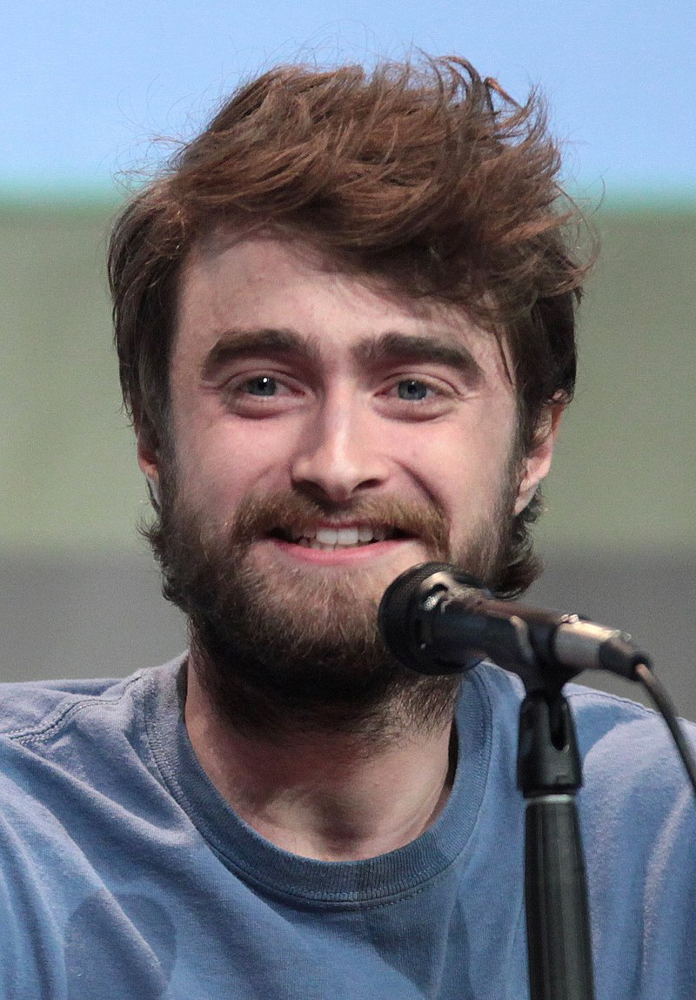
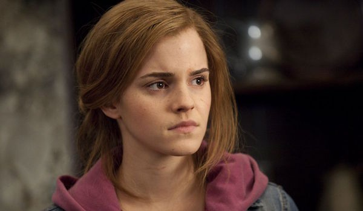
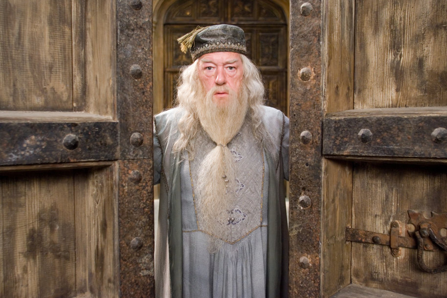

Daniel Radcliffe
Daniel Jacob Radcliffe (born 23 July 1989)[1] is an English actor, producer, and singer. He is best known for playing Harry Potter in the Harry Potter film series during his adolescence and early adulthood.Born and raised in London, Radcliffe made his acting debut at age ten in BBC One's television film David Copperfield (1999), followed by his cinematic debut in The Tailor of Panama (2001).During this period, Radcliffe became one of the highest-paid actors in the world, gained worldwide fame, popularity, and critical acclaim, and received many accolades for his performances in the series.

Emma Watson
Emma Charlotte Duerre Watson (born 15 April 1990)[3] is an English actress, model, and activist.She went on to star as Belle in the 2017 musical romantic fantasy Beauty and the Beast, and Meg March in the coming-of-age drama Little Women (2019), the latter of which was nominated for the Academy Award for Best Picture. Her other film roles include Regression, Colonia (both 2015), and The Circle (2017).From 2011 to 2014, Watson split her time between working on films and continuing her education, graduating from Brown University with a bachelor's degree in English literature in May 2014.which advocates for gender equality.

Rupert Grint
Rupert Alexander Lloyd Grint[2] (born 24 August 1988) is an English actor. He rose to prominence for his portrayal of Ron Weasley, one of the three main characters in the Harry Potter film series. Grint began to work outside of the Harry Potter franchise, playing a co-leading role in Thunderpants. He has had starring roles in Driving Lessons, a dramedy released in 2006, and Cherrybomb, a drama film of limited release in 2010. Grint co-starred with Bill Nighy and Emily Blunt in Wild Target, a comedy.

Richard Harris
Richard John Harris (1 October 1930 – 25 October 2002) was an Irish actor and singer. He appeared on stage and in many films, notably as Frank Machin in This Sporting Life, for which he was nominated for the Academy Award for Best Actor, and as King Arthur in the 1967 film Camelot, as well as the 1981 revival of the stage musical.He played an aristocrat captured by American Indians in A Man Called Horse (1970),